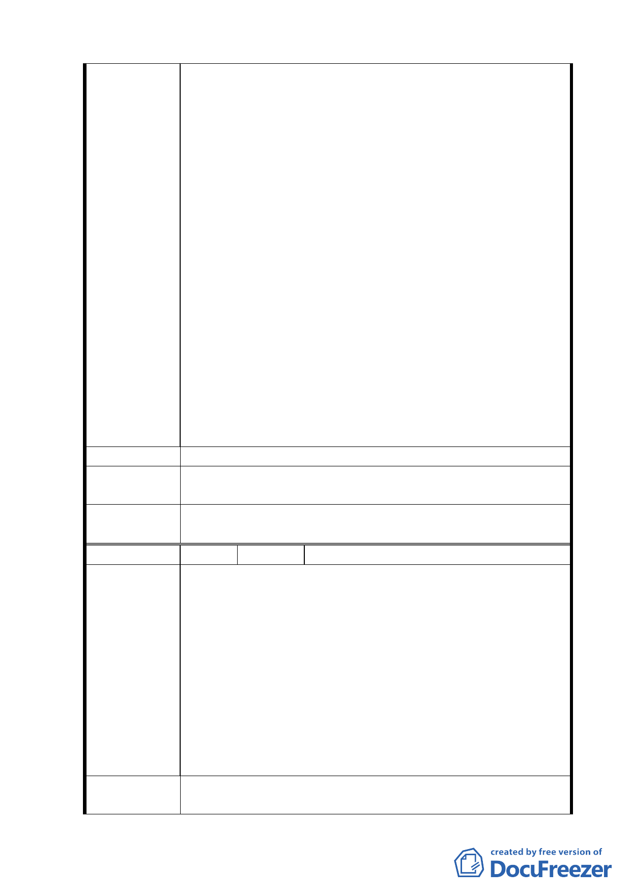

一、土地標示：文山區老泉段一小段四六五、四八四地號。
二、因為擴大區域為北二高下方往北方向的小山坡地，在不
影響高速公路路基及沒有水土保持的顧慮下，應該全面
擴大開發此計畫案。
三、依據八月十九日說明會以及開發方式圖示，本區域已經
不適合農業使用，本案計畫將運入大量土方增高，如果
擴大區域範圍，可以利用小山坡之土回填降低整個計畫
案的成本。計畫案中的十二米主要道路，隔絕了整個小
山坡，如果建議未被採納將造成農民耕作時停車找車位
陳情理由
的困擾。
四、全數農民認為北二高阻斷水源，不利生產農作物；車流
量及風向影響常有落塵附著農作物，造成農作物損害。
五、如果未採納擴大區域範圍，所有農民將質疑相關單位有
把本區當棄土場之嫌，因為有利降低開發成本不做，再
由外地大量運土回填。
六、如果將來必須由外地大量運土出入，因為有北二高施工
時造成環境不良影響得前車之鑑，必有多數居民出面抗
議影響整個計畫的開發。
七、建議案如被採納，可以利用降低成本來增加地主之分配
比率，才不會因為分配比率少，地主無法接受。
建 議 辦 法 擴大區域範圍。
專案小組
審查結論
所提建議位置非本案計畫範圍，錄請市府另行檢討。
委員會決
議
同專案小組審查結論。
編 號 ３ 陳情人 張發明
一、土地標示：文山區老泉段一小段一四一、一四二、一四
三、一四四地號。
二、茲因本地區在民國八十年，政大及高工局施工後深受其
害，（本地原為張家在清朝時期所蓋之三合院祖厝，門
陳情理由
牌號 13、14、15 號），因政府複雜法令之下，至今已荒
廢十四年，無法做有效利用，至今已繳納十餘年毫無受
益的稅金，（每年的稅高達 20 幾萬），貴委員會如今想
將市區土地做盡善盡美的現代化建設，本地位於市區之
內，為何本地區這次未被規劃於其中，盼能併入考量之
中，以便土地能地盡其利。
三、小百姓已無法負荷如此龐大而無受益之稅金。
建議辦法
一、是否能改做為住宅區。
二、以政府的計畫該屬於何種區域都市？
八